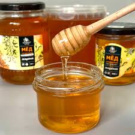

Полезный натуральный мёд

Мёд - натуральный продукт, который создают пчелы. Дикий мёд собирали еще 15 000 лет назад. Самое древнее свидетельство - наскальная живопись эпохи мезолита.

Мёд - натуральный продукт, который создают пчелы. Дикий мёд собирали еще 15 000 лет назад. Самое древнее свидетельство - наскальная живопись эпохи мезолита.